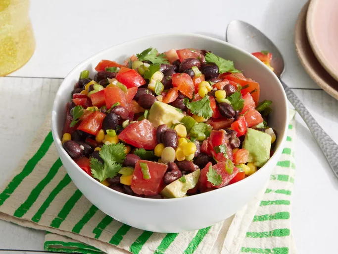

Black Bean and Corn Salad

Description
This black bean and corn salad is very colorful and includes a delicious lime and garlic dressing.
Ingredients
- ½ cup olive oil
- ⅓ cup fresh lime juice
- 1 clove garlic, minced
- 1 teaspoon salt
Steps
- Gather the ingredients.
- Place olive oil, lime juice, garlic, salt, and cayenne pepper in a small jar. Close the lid tightly and shake the jar until the dressing is well combined.
- Combine in a salad bowl beans, corn, avocado, bell pepper, tomatoes, green onions, and cilantro.
- Shake dressing again, pour over salad, and toss to coat.
- Enjoy!